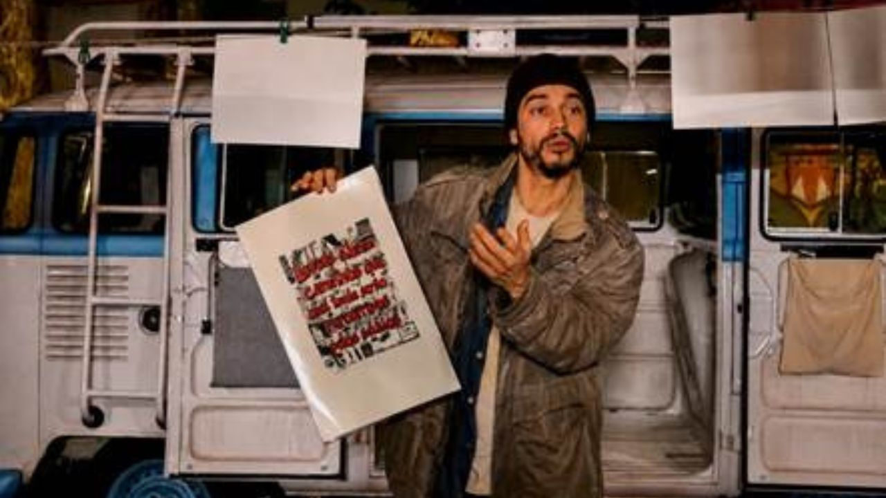

Foto — Marcelo Villas Boas
Teatro
“MANIFESTO” estreia na Funarte SP com Lee Taylor e direção de Georgette Fadel
O que acontece quando alguém decide interromper o fluxo esperado da própria vida? Em “MANIFESTO”, espetáculo inspirado na trajetória e nas ideias de Eduardo Mar…